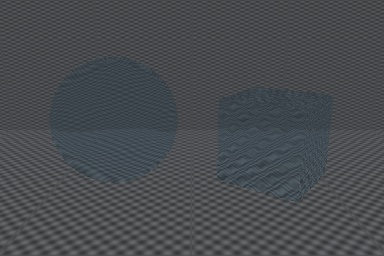
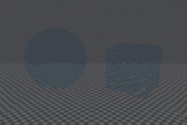

Guide · Unity 6 · URP 17
GrabPass in URP: use the Opaque Texture
GrabPass copies the screen into a texture so a shader can distort what is behind an object: glass, water,
heat haze. URP doesn't support GrabPass: the pass is ignored and the shader samples a texture that was never filled. The URP
replacement is the Opaque Texture.
The Built-in shader
// Guide sample: GrabPass refraction distorted by a normal map (Built-in).
Shader "Guide/Refraction (Built-in)"
{
Properties
{
_BumpMap ("Normal Map", 2D) = "bump" {}
_Distortion ("Distortion", Range(0, 0.1)) = 0.03
_Tint ("Tint", Color) = (0.85, 0.95, 1, 1)
}
SubShader
{
Tags { "Queue"="Transparent" "RenderType"="Transparent" }
GrabPass { "_BackgroundTexture" }
Pass
{
CGPROGRAM
#pragma vertex vert
#pragma fragment frag
#include "UnityCG.cginc"
sampler2D _BackgroundTexture;
sampler2D _BumpMap;
float4 _BumpMap_ST;
float _Distortion;
fixed4 _Tint;
struct v2f
{
float4 pos : SV_POSITION;
float4 grabPos : TEXCOORD0;
float2 uv : TEXCOORD1;
};
v2f vert (appdata_base v)
{
v2f o;
o.pos = UnityObjectToClipPos(v.vertex);
o.grabPos = ComputeGrabScreenPos(o.pos);
o.uv = TRANSFORM_TEX(v.texcoord, _BumpMap);
return o;
}
fixed4 frag (v2f i) : SV_Target
{
float2 offset = UnpackNormal(tex2D(_BumpMap, i.uv)).xy * _Distortion;
fixed4 background = tex2D(_BackgroundTexture, i.grabPos.xy / i.grabPos.w + offset);
return background * _Tint;
}
ENDCG
}
}
}
Step 1: turn on the Opaque Texture
Select your URP Asset and turn on Rendering ▸ Opaque Texture (a camera can also override it). URP then copies the screen into
_CameraOpaqueTexture after it draws opaque objects and the skybox. Opaque Downsampling defaults to 2x Bilinear,
which is cheaper but softer. Set it to None if the refraction should be sharp.
Step 2: rewrite the shader
// URP version of the GrabPass refraction sample, written by hand for the docs guide.
// Needs "Opaque Texture" turned on in the URP asset.
Shader "Guide/Refraction (URP)"
{
Properties
{
_BumpMap ("Normal Map", 2D) = "bump" {}
_Distortion ("Distortion", Range(0, 0.1)) = 0.03
_Tint ("Tint", Color) = (0.85, 0.95, 1, 1)
}
SubShader
{
Tags { "RenderPipeline"="UniversalPipeline" "Queue"="Transparent" "RenderType"="Transparent" }
Pass
{
Name "Refraction"
Tags { "LightMode"="UniversalForwardOnly" }
HLSLPROGRAM
#pragma vertex vert
#pragma fragment frag
#include "Packages/com.unity.render-pipelines.universal/ShaderLibrary/Core.hlsl"
#include "Packages/com.unity.render-pipelines.universal/ShaderLibrary/DeclareOpaqueTexture.hlsl"
CBUFFER_START(UnityPerMaterial)
float4 _BumpMap_ST;
float _Distortion;
half4 _Tint;
CBUFFER_END
TEXTURE2D(_BumpMap);
SAMPLER(sampler_BumpMap);
struct Attributes
{
float4 positionOS : POSITION;
float2 uv : TEXCOORD0;
};
struct Varyings
{
float4 positionCS : SV_POSITION;
float2 uv : TEXCOORD0;
};
Varyings vert (Attributes v)
{
Varyings o;
o.positionCS = TransformObjectToHClip(v.positionOS.xyz);
o.uv = TRANSFORM_TEX(v.uv, _BumpMap);
return o;
}
half4 frag (Varyings i) : SV_Target
{
float2 offset = UnpackNormal(SAMPLE_TEXTURE2D(_BumpMap, sampler_BumpMap, i.uv)).xy * _Distortion;
float2 screenUV = GetNormalizedScreenSpaceUV(i.positionCS);
half3 background = SampleSceneColor(screenUV + offset);
return half4(background, 1) * _Tint;
}
ENDHLSL
}
}
}
- The
GrabPassblock goes away. DeclareOpaqueTexture.hlsldeclares the texture andSampleSceneColor(uv).ComputeGrabScreenPosand the divide bywbecomeGetNormalizedScreenSpaceUV(positionCS)in the fragment shader, which also handles render scale and flipped render targets.- The object stays in the
Transparentqueue so it draws after the copy is made.


What is different from GrabPass
- Transparent objects aren't in the copy. The Opaque Texture is made before transparent objects draw, so glass doesn't show other glass,
particles or water behind it. A plain
GrabPass { }grabbed the screen again for each object; in URP every object sees the same copy. - Resolution. With the default downsampling the background is half resolution and slightly blurred.
- Cost. The copy is made once per camera when any camera or asset setting asks for it, whether or not a refracting object is visible.
If transparent objects must show through the refraction, you need your own copy of the screen made after they draw, from a renderer feature, and a shader that samples that copy.
Complete shader: RefractionURP.shader.
Have more than a handful of shaders?
Let URP Migrator do the rewrite
URP Migrator scans your project, then converts surface shaders, lit vertex/fragment shaders, GrabPass and
OnRenderImage effects to URP. It keeps your surf, vertex and lighting functions as they are, keeps material
property names, previews every change and backs up every file. On a 52-file test corpus, 44/44 converted shaders compile on four
graphics APIs and 41/44 render within 2/255 of Built-in (median 0.46/255; Unity's own Standard to URP/Lit conversion
measures 0.77/255).
More guides
- How to convert surface shaders to URP: Rewrite a Built-in surface shader as a URP shader: lit pass, shadows, depth, custom lighting and Forward+.
- OnRenderImage in URP: port image effects: Move OnRenderImage effects to the Full Screen Pass Renderer Feature or your own render graph pass.
- Built-in to URP migration checklist: Everything to check when moving a project to URP before the Built-in pipeline is removed.